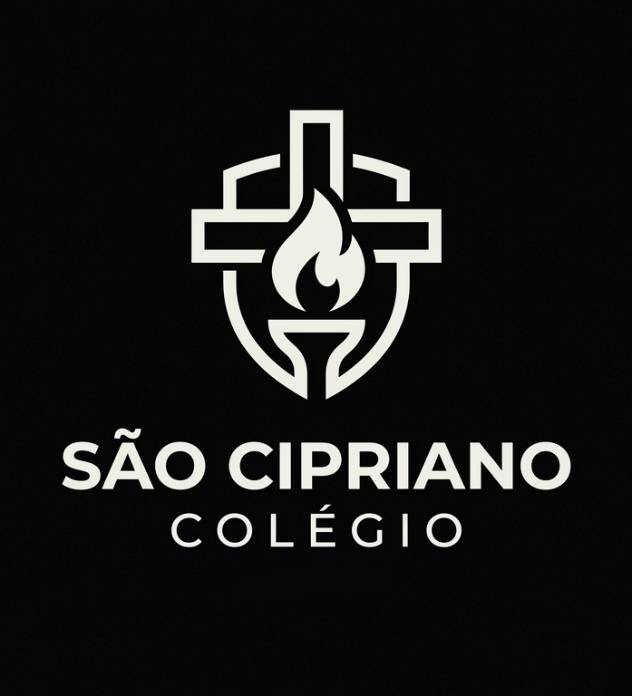

Colégio São Cipriano
O colégio São Cipriano, é uma instituição de ensino privada que vai do ensino fundamental até o ensino médio. Se localiza no bairro de Boa Viagem no Recife. Possui atividades como, natação, caratê, balé, basquete e futsal.

- Temos: duas quadras, Piscina, Laborátorios de infórmatica e Ciencia, além de uma grande Biblioteca;
- Temos atividades, como: Natação, Caratê, Balé, Basquete e Futsal;
- Temos professores qualificados, professores que tem compromisso com o aprendizado;
- Oferecemos aulas extras aos alunos que apresentam dificuldade;
- Temos aulas prática em Laborátorio;
- Salas de aula climatizadas, com projetor e telão.
Corpo Docente:
- João Fellipe Silva Costa (História)
- Simone Arruda do Nascimento Lima (Geografia)
- Mirella Sofia Lina Lins (Matemática)
- Erika Carina Oliveira Torres (Arte e Etica)
- Marson Bruno Ferreira Arcanjo (Ciências e Biologia)
- Samantha Vitória Barros Araújo (Química)
- Willian Guilherme Machado Carneiro (Física)
- Maria Helena Carvalho das Neves (Ed. Física)
- Everson Jorge Limeira Barbosa (Filosofia e Sociologia)
O colégio São Cipriano é uma instituição que presa pela disciplina.